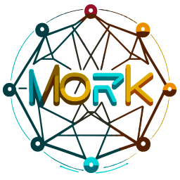
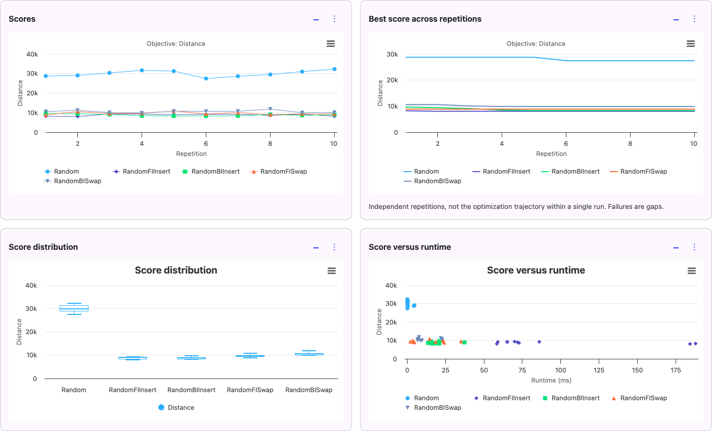
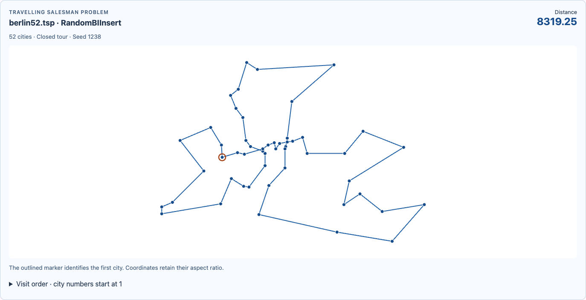

Combine algorithm components.
Combine VNS, simulated annealing, iterated greedy, and other strategies with your own constructors, local searches, and perturbations.
Components ↗
MORKBuild, tune, and evaluate metaheuristics for NP-hard problems. Use existing algorithm components, tune them with irace, and compare results in reproducible experiments on the JVM.
Combine VNS, simulated annealing, iterated greedy, and other strategies with your own constructors, local searches, and perturbations.
Components ↗Mork discovers your annotated components and builds the irace search space. Tune both component choices and parameter values without assembling that space by hand.
Autoconfig ↗Compare your approaches with reference results and best-known values. Export CSV and Excel reports with raw results and interactive pivot tables.
Reference results ↗AutoLLM uses language models to propose algorithm components, then builds and tests them. Each trial starts from the same code revision. The proposed components are tuned with irace and evaluated against a fixed reference algorithm.
View the source on GitHub ↗Run locally or over SSH. Track each campaign in the dashboard and resume it later.
Group instances by their properties and identify those that a baseline solves quickly. Review the suggested training and test sets before running your experiments.
Instance selection ↗Track solution quality and time to best. Enable timing traces to measure individual components in sequential or parallel experiments.
Explore the documentation ↗Export experiment data to CSV, TSV, or Excel, and solutions to JSON for further analysis.
Results and exports ↗Dashboard
Compare scores and runtimes across repeated runs, then inspect individual solutions. These screenshots show results from the Berlin52 travelling salesman example.


Generate a project to implement your problem and algorithms. Our paper describes the methodology Mork follows for reproducible experiments.
Read the research paper ↗